Cadastro de Contratos [
Voltar
]
Utilize este formulário para criar e revisar cadastros de contrato,
alterações, processos, notificações e executores.
O "Cadastro de contratos"
encontra-se no menu "Contratos".
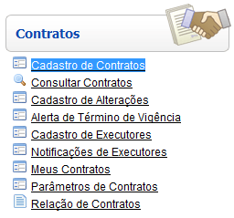
Após clicar no formulário, o sistema abrirá
a seguinte tela:
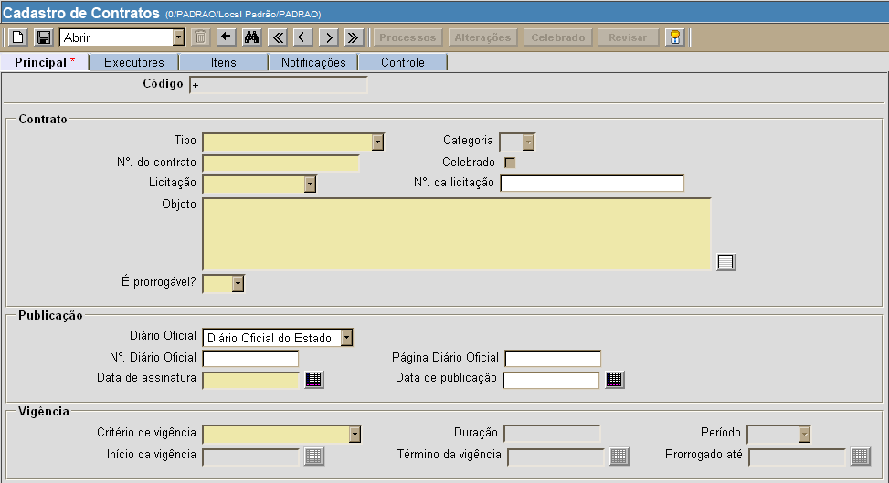
Siga os passos abaixo para cadastrar um
novo produto:
1º Passo: informe os dados principais do
cadastro. Os campos em amarelo são obrigatórios.
- Código.
Este campo apresenta um sinal de "+" por padrão. Desta forma, o próximo
número de contrato disponível ao registro, assim que este é salvo.
- Tipo.
Selecione um dos tipos de cadastro:
- Contrato;
- Termo
de Concessão;
- Termo
de Cessão;
- Termo
de Permissão;
- Termo
de Cooperação Técnica;
- Contrato
de Comodato;
- Contrato
de Gestão;
- Termo
de Ajuste de Conduta;
- Termo
de Doação;
- Termo
de Compromisso.
- Categoria.
Dependendo do tipo de contrato selecionado, será necessário ou não
escolher uma categoria.
- N°.
do contrato.
- Celebrado.
A caixa de seleção ao lado deste campo será marcada caso este contrato
já tenha sido celebrado.
- Licitação.
Selecione um dos tipos de licitação disponíveis:
- Carta
convite;
- Tomada
de Preço;
- Concorrência;
- Pregão;
- Inexigibilidade;
- Dispensa;
- Adesão
Ata.
- N°.
da licitação.
- Objeto.
Deposite neste campo o objeto do contrato.
- É
prorrogável? Marque Sim
ou Não
para informar se este é um contrato prorrogável.
- Diário
Oficial. Informe se este contrato está associado ao Diário
Oficial do estado ou da União.
- N°.
Diário Oficial.
- Data
de assinatura. Dicas
para preenchimento dos campos de data:
- Data
atual: digite o sinal . (ponto) e
pressione a tecla "Enter" para que o sistema retorne a data atual;
- Data
do mês corrente: digite o dia do mês e
pressione a tecla "Enter" para que o sistema retorne o mês e ano
correntes;
- Dias
a contar da data atual: digite o sinal + (mais) ou - (menos)
antes do número de dias em referência à data atual e pressione
a
tecla "Enter" para a data anterior ou posterior à data
atual. Exemplo: se a data atual é 20/10/2010,
digite "+10"
e pressione a tecla "Enter" para que o sistema retorne o dia 30/10/2010.
- Data
de publicação.
- Critério
de vigência. Selecione um critério de vigência: data de assinatura, data de
publicação ou informado pelo usuário.
- Duração
/ Período / Início da vigência
/ Término da
vigência / Prorrogado
até. Dependendo do critério de vigência
selecionado, estas informações devem ser especificadas.
- Contratada.
Clique no botão
 [Procurar]
para selecionar um fornecedor a partir do cadastro de fornecedores.
Para cadastrar um novo fornecedor, clique no botão [Procurar]
para selecionar um fornecedor a partir do cadastro de fornecedores.
Para cadastrar um novo fornecedor, clique no botão  [Cadastro de
fornecedores]. Para informações sobre como cadastrar um novo
fornecedor, ver manual Cadastro de fornecedores. [Cadastro de
fornecedores]. Para informações sobre como cadastrar um novo
fornecedor, ver manual Cadastro de fornecedores.
- Razão
social. É exibida aqui a razão social cadastrada para a
contratada.
- Responsável
legal. É exibido aqui o responsável legal
cadastrado para a contratada.
- CNPJ/CPF. É exibido aqui o CNPJ/CPF cadastrado para a
contratada.
- Contato. É exibido aqui o nome do contato da
contratada.
- Telefone
/ Fax / Email / Celular. É exibido aqui os dados do contato
cadastrado para a contratada.
- Valor
mensal / Valor mensal ajustado / Valor total / Valor total
ajustado.
- Moeda.
- Empenho.
- Observações.
2° Passo: após
inserir todos os dados principais do contrato, clique no botão  para
salvaras informações. para
salvaras informações.
3° Passo: se desejar, clique na aba "Executores" para cadastrar
executores do contrato em questão.
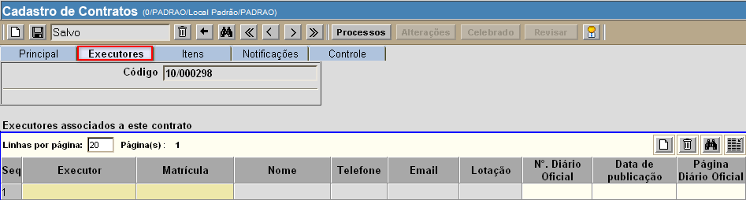
- Especifique
o tipo de executor. Informe se o executor
é Central ou Substituto.
- Informe
a matrícula do executor. Se necessário, clique no
botão
[Procurar] para selecionar o executor a partir uma listagem contendo os
executores cadastrados.
- Se necessário,
informe os dados do Diário Oficial.
- Após informar os
dados do executor, clique no botão para
concluir o cadastro. Em
seguida, clique no botão
 [Novo] na parte à direta da
tela, acima da grade, para adicionar novos executores. [Novo] na parte à direta da
tela, acima da grade, para adicionar novos executores.
Na
parte inferior da tela, são exibidos, caso existam, os processos
vinculados ao contrato e também as alterações já efetuadas (ver imagem
abaixo).
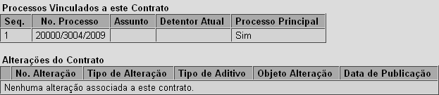
4° Passo: clique na
aba "Itens" para especificar os itens associados ao contrato em questão.
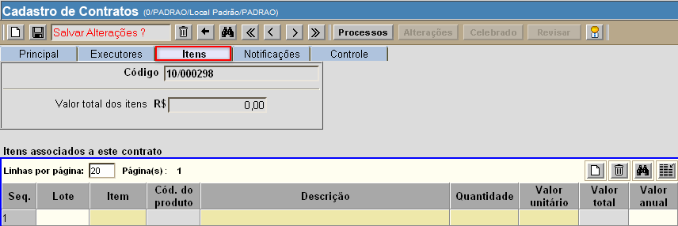
- Informe
o nome do item, assim como sua descrição, quantidade e valor unitário.
Clique no botão [Novo]
na parte à direta da tela, acima da grade, para adicionar novos itens.
Dica: uma vez na grade, pressione a tecla "Enter" para ir de um campo a
outro.
- Após
informar todos os itens e respectivas informações, clique no botão para
salvar o registro.
5° Passo: clique na
aba "Notificaçãoes" para visualizar ou cadastrar uma nova notificação.
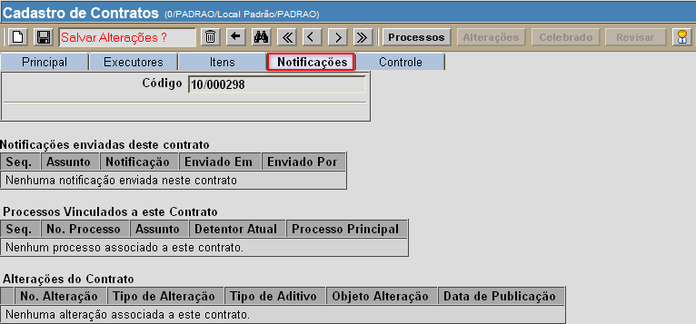
Para cadastrar uma nova notificação, clique no link contido na seção
"Notificações enviadas deste contrato" (ver imagem abaixo).
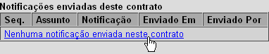
Ao clicar no link para registro de nova notificação, a seguinte tela
será aberta:
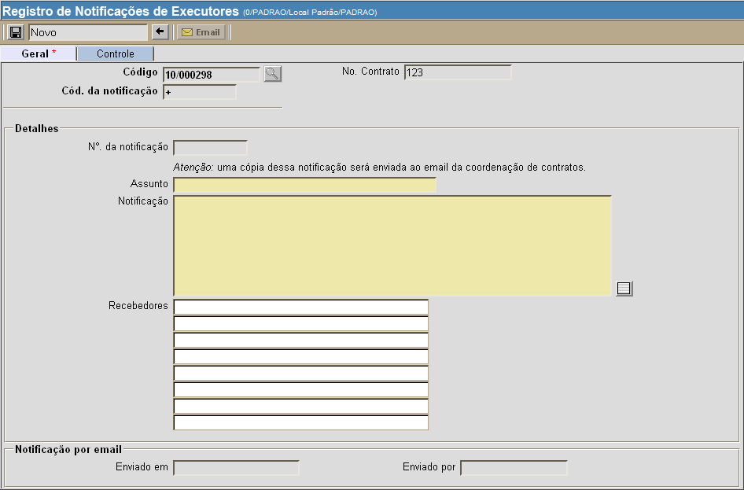
- Especifique o
assunto e e o conteúdo da nova notificação.
- Em seguida, clique
no botão para registrar os dados inseridos.
- Clique
no botão
 para confirmar a
notificação e enviá-la por email. para confirmar a
notificação e enviá-la por email.
6° Passo: clique no
botão  para associar o
contrato a um ou mais processos. para associar o
contrato a um ou mais processos.
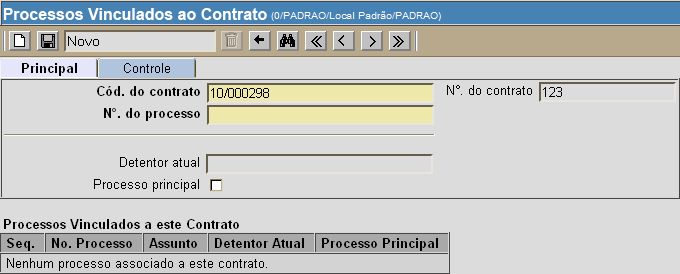
- Informe
o número do processo vinculado. Se este for o processo
principal, marque a caixa de seleção abaixo do campo "Dentetor atual".
- Em
seguida, clique no botão para registrar os dados inseridos.
- Para
adicionar outros processos, clique no botão e repita os procedimentos acima.
- Para
voltar à tela principal do cadastro, clique no botão
 . .
7° Passo: clique no
botão  para marcar o contrato
em questão como "Celebrado". Após a celebração do
contrato, os botões e para marcar o contrato
em questão como "Celebrado". Após a celebração do
contrato, os botões e
 serão
habilitados. serão
habilitados.
Cadastro
de alterações do contrato
Após abrir o contrato para o qual deseja registrar uma alteração,
clique no botão .
A seguinte tela será aberta:
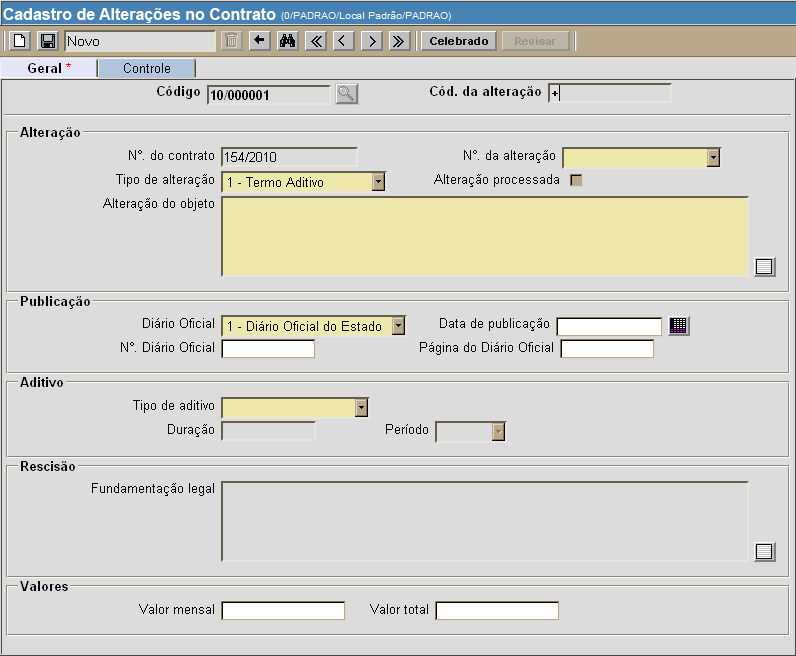
1° Passo: preencha
os dados da alteração. Os campos em amarelo são
obrigatórios.
2° Passo: clique no
botão para salvar os dados da
alteração.
3° Passo: se os dados estiverem corretos, clique no botão para celebrar a
alteração. Após a celebração do contrato, é possível
realizar a revisão da alteração. Para revisões, clique no botão .
Se desejar efetuar a revisão de outra alteração existente, selecione-a
na seção "Alterações do Contrato" na parte inferior da tela (ver imagem
abaixo) e clique no botão .
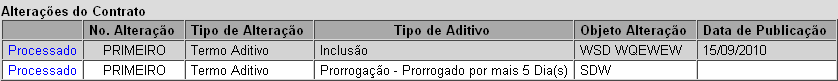
Após efetuar as revisões desejadas, clique no botão e,
em seguida, clique no botão para
concluir a revisão.
Para voltar à tela principal do cadastro, clique no botão .
Ir
para o topo da página
|